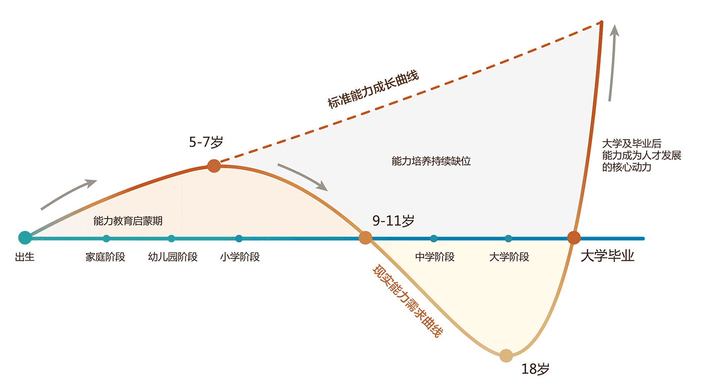

- 关于我们
-
新艺道（北京）教育科技有限公司成立于2014年9月，是一家专注于儿童能力培养的教育服务机构，拥有专业的能力培养课程体系研发能力、教育服务能力和顶层设计规划能力。致力于为4-12岁的孩子和家庭提供融合美式STEM应用、关键期能力培养及素质教育创新模式解决方案，培养具有健全人格及国际化视野的未来儿童。
新艺道（北京）教育科技有限公司历时近两年、组织十余位中美儿童能力培养专家共同研发的童王星能力培养课程正式内测，从产品到运营服务得到了家长和业界的一致认可，并于2017年3月15日在北京盘古七星酒店正式推出童王星项目。童王星是基于国际先进教育理念，专注于 4-12 岁儿童关键期能力培养的儿童素质教育 +AI 应用的教育品牌，并率先在全球提出“完整童商”这一理念，通过“童商测评 + 数字化教学 + 大数据服务”打造专注能力培养的童商大学。
- 历程
-
- 2015年12月童王星STAR课程体系1.0版本全面开发完成
- 2016年5月童王星体验中心——华贸中心正式成立
- 2016年8月童王星STAR课程体系内测完成
- 2016年12月童王星荣获央广网2016年度中国创新科技教育知名品牌
- 2017年3月童王星项目启动发布会在北京盘古七星酒店召开
- 至今童王星拥有20余家加盟商
- 我们为什么要做能力培养？
-

童王星以场景的概念切入当前儿童能力教育市场，并概括出了儿童能力成长曲线。
实线代表了外界对孩子的能力需求，而虚线则代表了正常情况下我们的能力水平。
正如价值规律曲线一样，理想状态下，能力水平曲线应与能力需求曲线相吻合；正常状态下，能力水平曲线将围绕能力需求曲线上下波动。
但实际情况中，在7岁（左右）这个拐点之后，由于学业压力繁重，外界对孩子的能力需求持续低走，并伴随能力培养减少，高三考生甚至在家都不需要自己叠被子、挤牙膏；然而随着孩子18岁之后步入社会，外界对他们的能力需求陡然上升。这种大落大起直接导致了孩子在步入社会后的种种不适应。比如对财富认识错误导致的裸贷、身陷传销；对情绪处理不当导致的室友不和；沟通、实践能力薄弱导致的工作难求等。
- 儿童教育到底是什么？
-
是给孩子灌输知识吗？不是。
童王星，专注能力培养的童商大学。
孩子是比我们晚出生的人，更是比我们活更长时间的人，
我们无法预知他要面对的世界，所以过去的知识和经验都可能失效。
爱因斯坦认为:“所谓教育，就是一个人把在学校所学全部忘光后，剩下的东西。”
对孩子来说，剩下的是什么？
是面对、分析、解决问题的智慧与能力。
童王星要做的，就是帮助你培养孩子获取人生幸福的能力。